WebGL2,
without the boilerplate.
A lightweight toolkit for building fragment shaders, scroll-driven scenes, and simple WebGL scenes.
WebGL2 primitives and high-level recipes that compose.
wtc-gl provides the scaffolding - programs, meshes, cameras, render loops, texture utilities - so you spend time on the interesting parts. Use just the pieces you need, or reach for the opinionated recipes.
Full-screen fragment shaders
One class, one shader. FragmentShader creates a canvas,
wires up u_time and u_resolution, and
starts the render loop. Mouse, resize, and pixel-ratio are all
handled for you.
Inline scenes on any element
One fixed canvas, scissor-tested viewports, one shared render loop.
ScrollRenderer anchors independent WebGL programs to
DOM elements - no iframes, no per-canvas GPU contexts, no scheduling
jank.
GPU particle simulations
TransformFeedback handles ping-pong buffers
automatically. Write your velocity kernel in GLSL, read positions
back as attributes - millions of particles without touching the CPU
each frame.
See the primitives in action.
Each demo isolates one or two core concepts - textures, framebuffers, webcam input, GPU particles - so you can pull the code apart and adapt it.
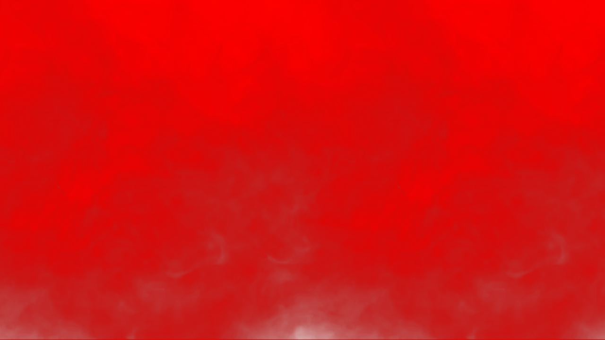
Video texture
A video element sampled as a live Texture and fed
into a fragment shader each frame. The
onBeforeRender hook marks the texture dirty so the
GPU always sees the current video frame.
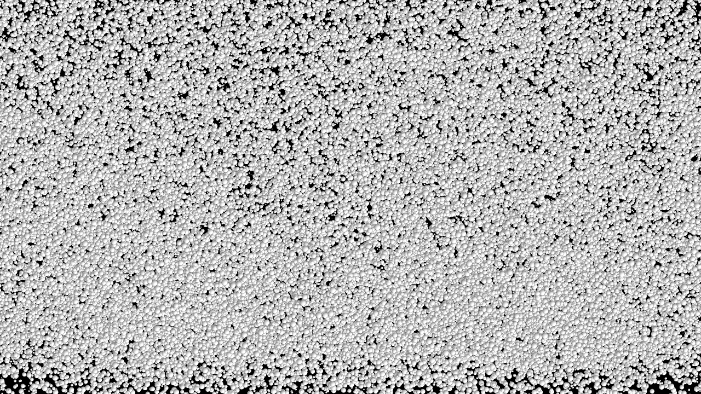
GPU particle simulation
Thousands of particles simulated entirely on the GPU using
TransformFeedback ping-pong buffers. Velocity is
computed in a vertex shader and fed back as position attributes
each frame - zero CPU involvement per particle.
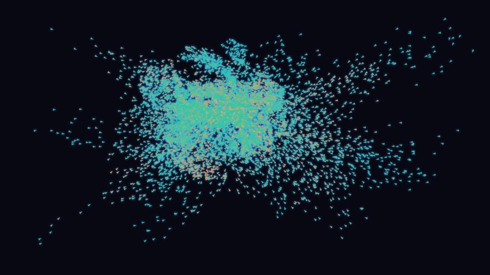
Swarm
8,192 agents chase the pointer through a flow field. One
TransformFeedback simulation is stepped several times
a frame without drawing, then drawn twice from the same buffers:
as instanced arrows pointing along each agent's velocity, and as
an additive glow. Position and velocity are captured interleaved,
each agent's seed is a static attribute, and Reset restarts the
simulation.
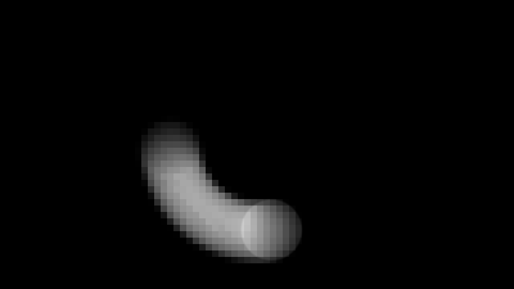
Framebuffer post-processing
A scene rendered to an off-screen Framebuffer, then
composited through a second pass. Demonstrates the
render-to-texture pipeline for effects like bloom, blur, and
feedback loops.
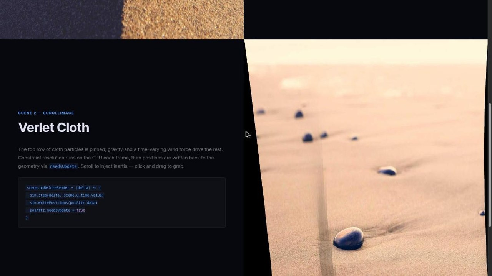
ScrollImage & ScrollHTML
Three scenes on one canvas. Scene 1: hue ripple at the cursor via Rodrigues rotation. Scene 2: a Verlet cloth simulation deforming an image — scroll to inject inertia, click to grab. Scene 3: the same cloth with a live HTML form as its texture using the experimental HTML-in-Canvas API.
Open demo →React ScrollRenderer
The ScrollRenderer demo rebuilt with
@wethegit/react-wtc-gl: a provider owns the canvas
and render loop, hooks register scenes from components, and React
state pauses the loop. Runs in StrictMode to exercise the cleanup
paths.
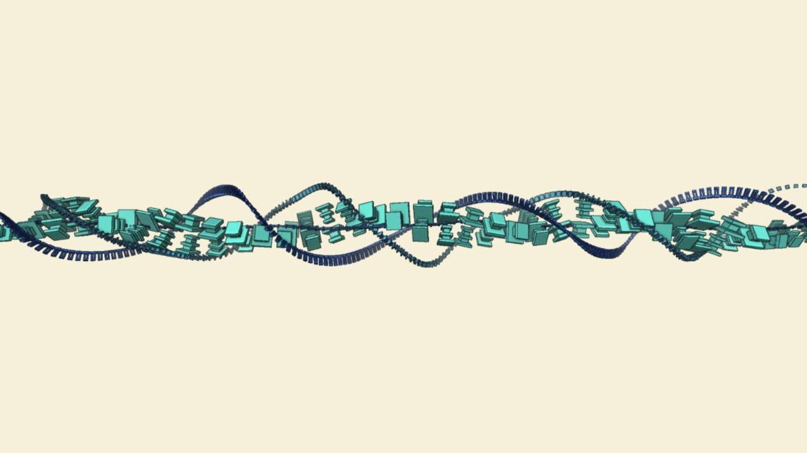
React Manifold Divider
A section divider: instanced box modules coil around a line on helical strands and flow along it. Each divider renders a float G-buffer offscreen, then composites outlines, AO and fog into its strip of the shared ScrollRenderer canvas.
Open demo →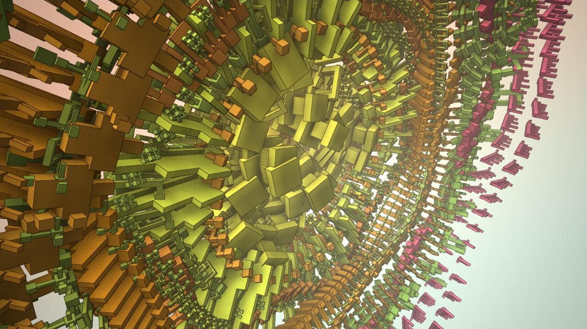
Manifold Mandala
Thirty rings of instanced box modules form a funnel that reads as a mandala head-on. Rings spin, ripple and regrow as new shapes; click to sweep a new palette through them. The same float G-buffer and outline, AO and fog pass as the divider.
Open demo →React DragWorld
A click-and-drag explorable world in the style of the Super Mario
Odyssey site: a 4,400px map panned with momentum and elastic
bounds, where shader regions registered with
useScrollScene light up as you approach them.
React DragWorld Infinite
The drag world wrapped into a torus: no edges, no bounds — each region is a single DOM element folded back around the seam while off-screen, with a compass pointing the shortest way home across the wrap.
Open demo →Webcam cellular automata
A ping-pong Framebuffer runs Conway's Game of Life
where webcam brightness seeds new cells. Living cells inherit the
webcam's colour at the moment of their birth, creating a living
portrait that evolves frame by frame.
Raymarching on a mesh
A raymarching SDF rendered inside the volume of a rotating
Box mesh. The fragment shader casts rays from each
mesh surface point, infinitely repeating a frame-and-sphere
lattice. The cube's model matrix is passed as a uniform so the SDF
space rotates in sync with the geometry.
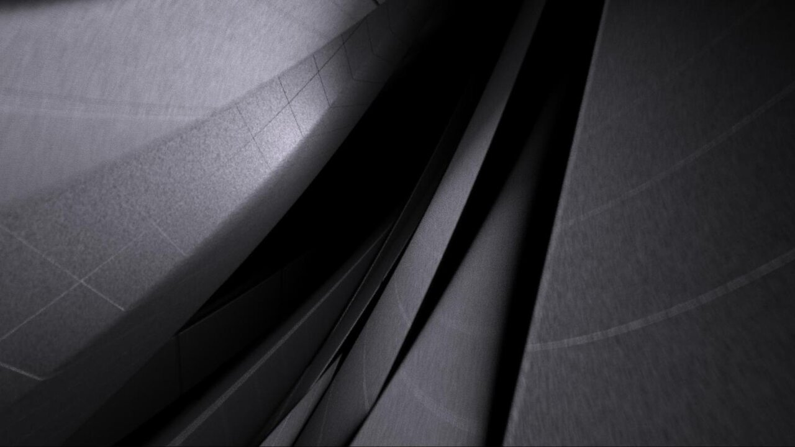
Progressive render
A raymarcher far too heavy for one frame, rendered a tile at a
time. Each tile goes into one Framebuffer through a
viewport, a composition pass adds it to the image so far in
another, and the tile size adapts to keep frames responsive. Click
for a new image.
Scroll blades
An editorial scroll layout: a fullscreen animated background via
ScrollScene, four alternating image/text blades each
using ScrollImage for cover-fit, parallax, and
chromatic aberration — all on one shared WebGL context.
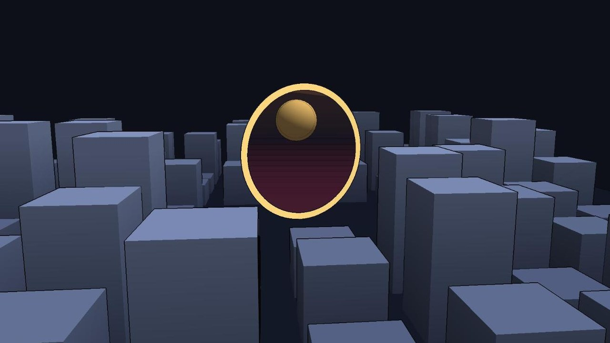
Stencil & depth texture
A portal into another world, drawn with a
RenderTarget whose depth and stencil share one
texture. The stencil limits the second world to the portal, and a
post pass samples the depth texture for fog and outlines. Switch
views to see the depth and stencil on their own.
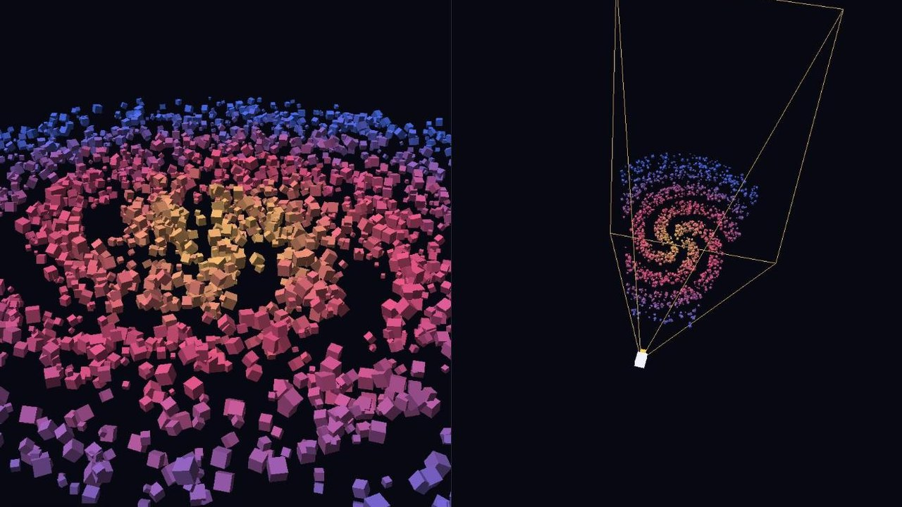
Many meshes
A spiral galaxy of up to 6,000 separate meshes, each moved and rotated every frame. One pane is the camera you control; the other watches it from above, showing its frustum and only the meshes it didn't cull. Matrices, uniforms and render lists are updated in place, so the render loop makes almost no garbage.
Open demo →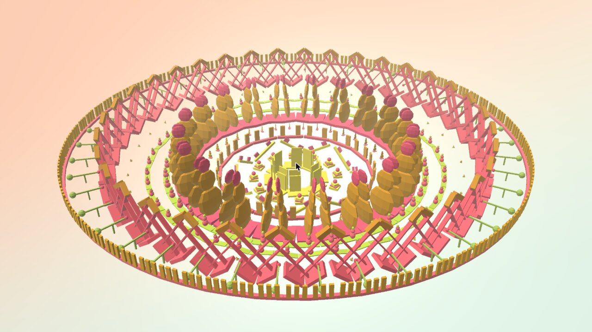
Building geometry
Concentric rings of modules, built in code and drawn as one mesh.
Boxes and spheres placed with applyMatrix merge into
a module, copies of the module (every other one mirrored) merge
into a ring, and the rings merge into the sculpture. A regrow wave
rebuilds one ring at a time while the shader grows it and explodes
the sculpture, so it stays a single draw call. Flat and smooth
shading come from toNonIndexed and
mergeVertices.
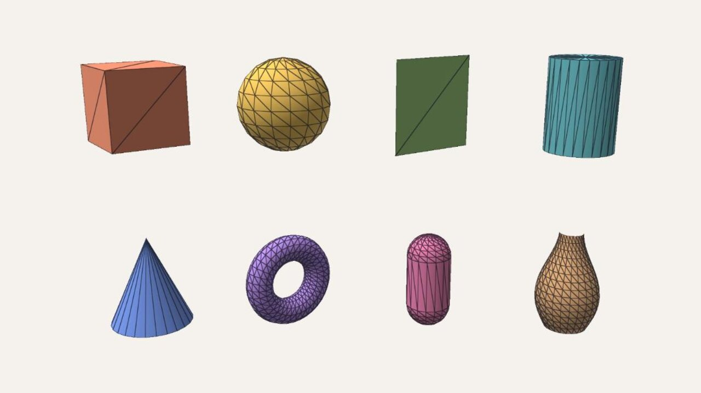
Primitives
Every built-in primitive side by side, with its options in the
pane: segments, radii, partial sweeps and open ends. Changing an
option rebuilds that shape. Switch between lit, normals and a uv
checker, flat and smooth shading, and turn off back-face culling
to see inside the open shapes. The vase is a Lathe of
a 2D profile, and a cone is a Cylinder with
radiusTop: 0.
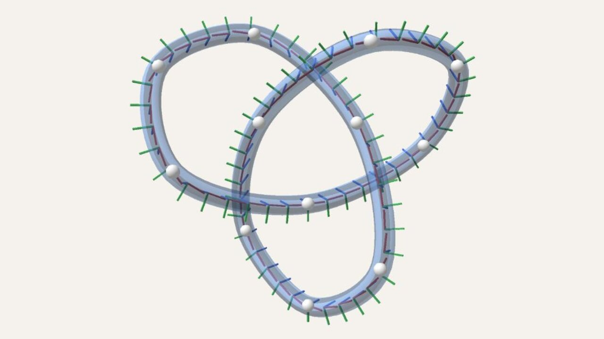
Paths
A tube swept along a Catmull-Rom curve through points you can
drag. Markers compare samples spaced evenly by distance with
parametric ones that bunch up, and axes show the
rotation-minimising frames the tube follows, matched up around a
closed trefoil. Twist and taper the tube, and switch
alpha to see the uniform curve loop on a hairpin
where the centripetal one doesn't. Tension tightens or loosens the
curve, and the B-spline type is smoother still, pulled towards the
points rather than through them. The extrude preset turns a flat
outline and hole into a bevelled solid as you drag, with hard
edges wherever it turns sharper than the crease angle.
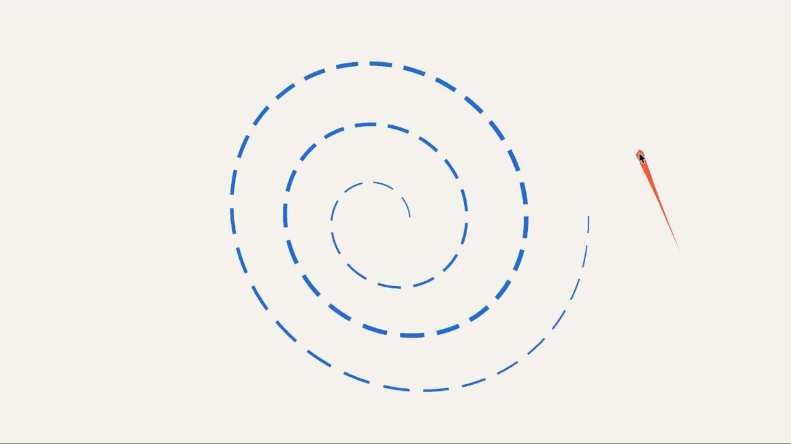
Lines
A spiral that draws itself on, tapered and dashed, with dashes measured by the distance travelled so they keep their length. As a billboard it always faces the camera, in pixels or world units. Switch it to a ribbon and it becomes a flat strip in world space that twists along its length and banks into its turns. Move the pointer to draw a trail, which pushes a new point every frame.
Open demo →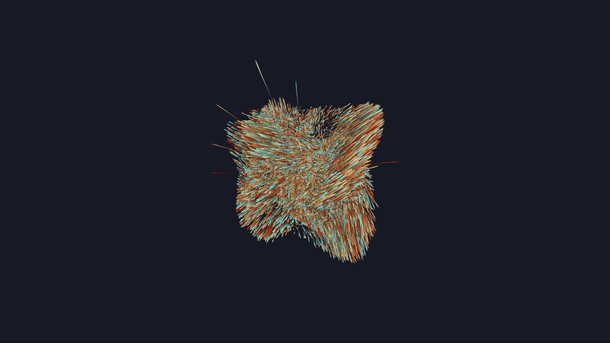
Polyline trails
16,384 particles swirl through a force field, each drawn as a
ribbon through its recent positions. A float simulation writes
into a history texture, and one instanced
Polyline with a custom vertex shader reads it back
and extrudes each trail with polylineExtrude. Click
for the next shot.
A shader on screen in five lines.
import { FragmentShader } from 'wtc-gl' import myFrag from './my-shader.frag' const fs = new FragmentShader({ fragment: myFrag, container: document.querySelector('.canvas-wrap') }) // u_time and u_resolution are wired up automatically. // Add your own uniforms any time: fs.setUniform('u_mouse', [x, y])
Install via npm, import from your bundler, and point it at a container. The canvas is created, sized, and animated for you.
For scroll-driven multi-scene layouts see ScrollRenderer →
The building blocks.
Renderer
WebGL2 context creation, pixel-ratio handling, and the main render loop.
Program
Shader compilation, uniform management, and attribute binding in one place.
Mesh
Geometry + program pairing with transform hierarchy via parent/child scene graph.
Geometry
Triangle, Plane, and Box primitives; or supply your own attribute buffers.
Texture
Create textures from typed arrays, images, or video — with format helpers.
Framebuffer
Off-screen render targets for post-processing and ping-pong feedback.
Camera
Perspective and orthographic cameras with look-at and dolly helpers.
Uniform
Typed uniform wrappers that track dirty state and batch-upload efficiently.